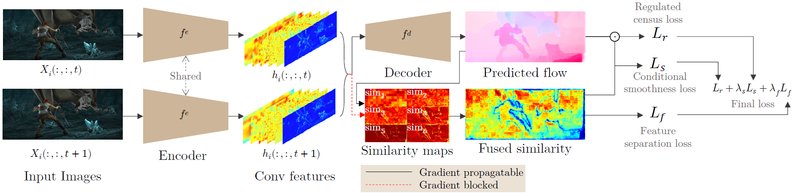

Short introduction video
Overview
 This shows the overview of our method, which is end-to-end trainable for both optical ow and self-supervised deep featuresAbstract
Deep unsupervised learning for optical flow has been proposed, where the loss measures image similarity with the warping function parameterized by estimated flow. The census transform, instead of image pixel values, is often used for the image similarity. In this work, rather than the handcrafted features i.e. census or pixel values, we propose to use deep self-supervised features with a novel similarity measure, which fuses multi-layer similarities. With the fused similarity, our network better learns flow by minimizing our proposed feature separation loss. The proposed method is a polarizing scheme, resulting in a more discriminative similarity map. In the process, the features are also updated to get high similarity for matching pairs and low for uncertain pairs, given estimated flow. We evaluate our method on FlyingChairs, MPI Sintel, and KITTI benchmarks. In quantitative and qualitative comparisons, our method effectively improves the state-of-the-art techniques.